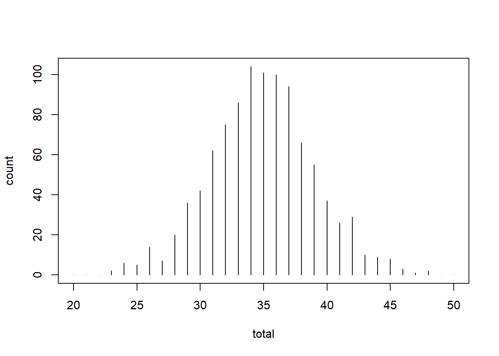
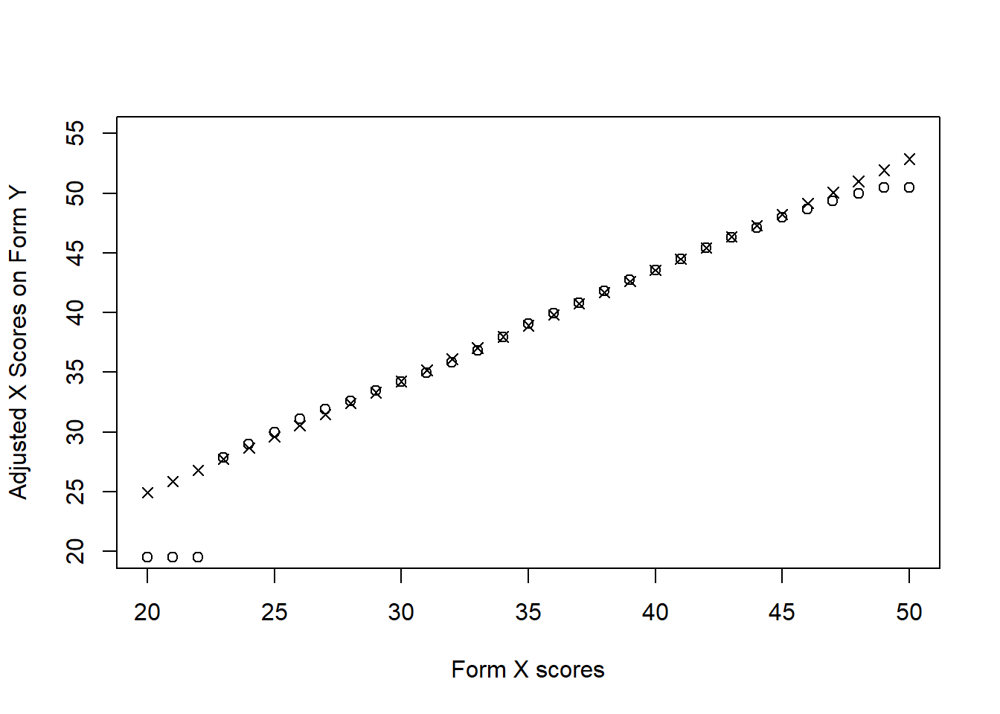
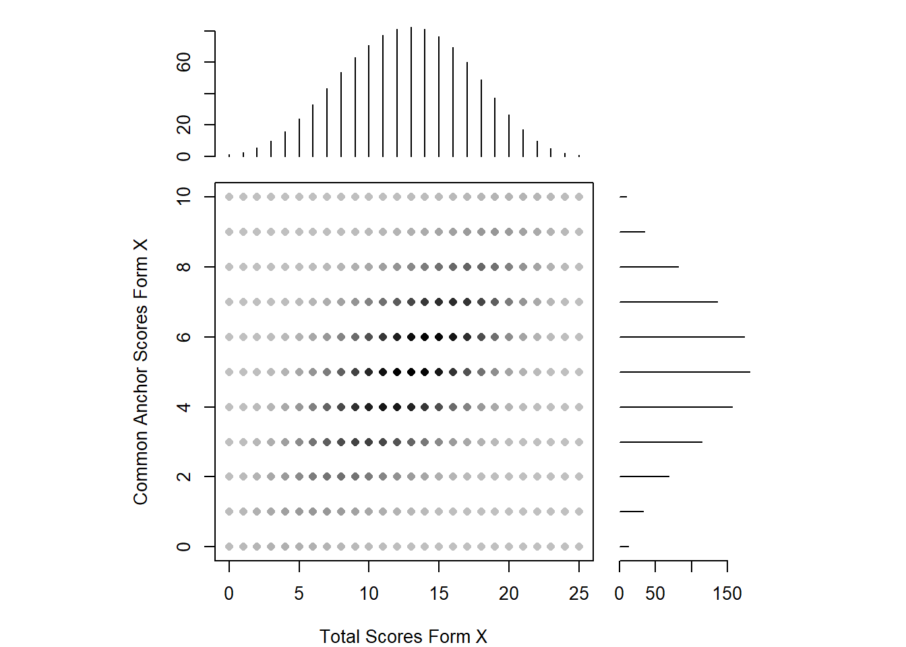

vignette("equatevignette")Warning: vignette 'equatevignette' not found이 장에서는 문항 반응 이론(IRT)을 사용하지 않는 검사 동등화 방법을 소개합니다. 이 장은 동등화에 대한 간략한 소개로 시작합니다. 여기에는 동등화 및 연결 설계(단일 집단, 동등 집단, 비동등 집단)와 함수(일반 선형 및 동백분위수)에 대한 검토가 포함됩니다. 다양한 설계와 함수를 사용하는 예제는 R의 equate 패키지(Albano, 2016)를 사용하여 시연합니다.
미국의 고등학교 3학년 학생들은 일반적으로 대학 입학 시험을 치릅니다. 이러한 입학 시험은 수험생이 시험 날짜를 유연하게 선택할 수 있도록 하고 재응시를 허용하기 위해 한 해 동안 여러 시험 날짜에 걸쳐 시행됩니다. 시험은 연도 내 또는 연도에 걸쳐 여러 번 시행되기 때문에 서로 다른 시험 문제가 필요합니다. 동일한 시험 문제를 여러 차례에 걸쳐 사용할 경우, 먼저 시험을 치른 수험생이 나중에 시험을 치른 수험생에게 문항의 내용과 정답을 알려주거나, 원하는 점수를 얻기 위해 여러 번 시험을 치른 수험생이 해당 구인에 대한 지식이 증가해서가 아니라 문제에 대한 사전 노출 또는 시험 응시 능력의 증가로 인해 더 높은 점수를 받을 수 있습니다. 따라서 동일한 시험을 사용하는 대신 검사 설계의 도움을 받아 동일한 시험 사양에 따라 다양한 형태의 시험을 구성합니다. 이렇게 하면 시험 양식이 유사하고 서로 다른 양식의 점수가 비슷하게 나오도록 할 수 있습니다.
시험의 보안, 즉 문항 노출에 대한 우려로 인해 일반적으로 동등화라는 통계적 절차를 통해 서로 다른 시험 양식의 시험 점수를 조정하는 데 사용됩니다. 점수를 조정해야 하는 이유는 무엇인가요? 시험 양식 중 하나가 다른 시험 양식보다 더 어려울 수 있으며, 특정 시험 양식에 응시하는 피험자는 시험 구인에 대한 지식이 부족해서가 아니라 검사도구의 난이도 때문에 점수가 낮을 것으로 예상되기 때문입니다. 이는 측정 오차의 한 유형이며 동등화 절차를 통해 수정할 수 있습니다. 동등화는 시험 양식의 난이도 차이를 조정하고 다양한 시험 양식의 점수를 상호 교환하고 비교할 수 있도록 합니다.
Kolen과 Brennan(2014)에 따르면, 동등화의 바람직한 특성은 다음과 같습니다:
Kolen과 Brennan(2014)은 검사 동등화를 구현하는 데 유용한 단계 목록도 제시합니다. 이 목록에는 동등화 목적 확인, 대체 가능한 형태의 시험 구성, 동등화의 설계 및 운영 정의 고려, 추정, 마지막으로 결과 평가가 포함됩니다. 이 장에서는 동등화 설계, 추정 방법 및 동등화 결과 평가와 관련된 단계에 중점을 두는데, 이는 R에서 동등화가 수행되는 방식에 영향을 미치기 때문입니다.
동등화 연구에는 다양한 동등화 설계가 사용될 수 있으며, 어떤 설계를 사용할지 결정하는 것은 중요한 통계적 의미를 갖습니다. 동등화 연구에 참여하는 수험생은 수험생 집단을 대표할 수 있어야 하며, 연구는 일반적인 시험 환경에서 수행되어야 합니다. 이 장의 뒷부분에서 사용할 equate 패키지에서 사용되는 규칙을 따르기 위해 동등화 설계를 단일 그룹, 동일 그룹 또는 동일하지 않은 그룹으로 분류합니다.
단일 집단 설계에서는 무작위 표본의 수험생이 X형과 Y형 두 가지 시험 유형을 모두 응시합니다. 검사 피로도와 순서에 따른 잠재적 효과(예: 문항에 대한 친숙도 증가로 인한 성적 향상) 때문에 역균형화가 고려될 수 있습니다. 역균형화는 수험생 중 일부가 X형을 먼저 치르고(하위 그룹 A), 다른 일부가 Y형을 먼저 치르는(하위 그룹 B) 방식으로 이루어집니다. 양식 X와 Y의 점수 분포에 차이가 있는 경우 시험 양식 난이도의 차이로 인해 발생하는 것으로 가정하지만, 균형을 맞추지 않은 경우에는 피로도와 같은 다른 요인으로 인해 X와 Y의 차이가 발생할 수 있습니다. 예를 들어, 시험 양식 X의 평균이 10점이고 시험 양식 Y의 평균이 13점인 경우, 시험 양식 Y가 양식 X보다 3점 더 쉽습니다(순서가 영향을 미치지 않는다고 가정).
동일 집단 설계에서는 수험생의 무작위 표본이 시험 유형 X를, 두 번째 무작위 표본이 시험 유형 Y를 응시합니다. 이들은 동일한 모집단에서 무작위로 추출된 표본이므로, 무작위 배정을 통해 두 집단이 평가되는 능력이 동등해야 하므로 점수 분포의 차이는 다시 시험 난이도의 함수라고 가정합니다. 양식 X를 치르는 집단의 평균이 10이고 양식 Y를 치르는 집단의 평균이 13인 경우, 시험 양식 Y는 다시 양식 X보다 3점 더 쉬워집니다.
비동일 집단 설계에서는 서로 다른 양식을 응시하는 수험생 집단이 동일한 집단에서 나왔다고 가정할 수 없습니다. 따라서 구인에 대한 잠재 능력 차이를 고려해야 합니다. 능력의 차이는 공통 문항(예: 앵커 테스트)을 사용하여 설명할 수 있습니다. 이러한 공통 문항의 점수는 내적 요인(특정 시험 양식에서 수험자의 점수에 기여)이거나 외적 요인(특정 시험 양식에서 수험자의 점수에 기여하지 않음)일 수 있습니다.
동등화 함수는 단일 집단 또는 동일 집단 설계에서 시험 양식을 공통 척도에 배치하는 데 사용됩니다. 그러나 비동일 집단 설계를 사용하는 경우, 양식을 공통 척도에 배치하는 데 사용되는 기술을 동등화 방법이라고 합니다. 이 구분은 미묘해 보이지만 다시 한 번 중요한 통계적 의미를 갖습니다. 동등화 함수를 사용하면 수험생이 동일한 모집단에서 왔다고 가정하는 반면, 동등화 방법은 수험생이 서로 다른 두 모집단(예: P1과 P2)에서 왔다고 가정합니다. P1과 P2의 잠재적 차이로 인해 공통 문항과 고유 문항을 사용하여 이 두 모집단의 가중치 혼합을 나타내는 합성 모집단을 구성하려면 동등화 방법이 필요합니다. 선택된 동등화 방법은 총점과 P1 및 P2의 공통 문항 점수 사이의 관계에 대한 가정에 의존합니다(Braun & Holland, 1982; Kolen & Brennan, 2014).
equate 패키지의 동등화 함수는 크게 선형 함수와 비선형 함수의 두 가지 범주로 나뉩니다. 선형 함수에는 동일성, 평균, 선형 및 일반 선형 함수가 포함됩니다. 비선형 함수에는 동백분위, 원호 및 복합 함수가 포함됩니다. equate 패키지에는 여러 가지 동등화 방법도 있습니다. 명목 가중치, Levine, Tucker, Braun, 빈도 추정 및 연쇄 동등화 방법이 있습니다. 이러한 방법은 위에 나열된 여러 함수와 함께 사용할 수 있습니다(적절한 동등화 함수를 선택하는 데 도움이 되는 추가 정보는 equate 비네팅의 표 1과 Kolen과 Brennan(2014)의 표 8.5 참조). 이러한 함수와 방법은 아래에 제시될 때 간략하게 설명할 것입니다.
동등화가 수행된 후에는 결과를 평가해야 합니다. 여기에는 부트스트랩을 통해 동등화의 표준 오차를 계산하거나, 앞서 언급한 속성을 공식적으로 평가하거나, 결과의 일관성을 평가하는 것이 포함될 수 있습니다. 여기서는 equate 패키지에서 얻을 수 있는 적합도 측정에 중점을 둡니다. 부트스트래핑을 통해 얻은 표준 오차, 편향, 평균제곱근 오차뿐만 아니라 다양한 동등화 함수/방법의 결과를 시각적으로 비교하는 것도 민감도 분석으로 사용할 수 있습니다. Koren과 Brennan(2014)의 제8장에서는 동등화를 평가하는 절차에 대해 자세히 설명합니다.
이 장의 간결성을 고려하여 동등화에 대한 보다 부드러운 소개가 필요한 독자의 경우 Livingston(2014)의 “Equating Test Scores(IRT 제외)” 논문을 확인하는 것이 좋습니다. 동등화의 처리를 통해 더 깊이 있고 더 많은 것에 관심이 있는 독자는 Kolen 및 Brennan(2014)을 강력하게 참조합니다. 마지막으로, equate 패키지 내에서 다른 동등화 함수를 사용하려는 대체 동등화 설계를 사용하는 독자는 Journal of Statistical Software(Albano, 2016)에 게재된 Anthony Albano 박사(equate의 저자)가 준비한 논문을 읽어야 합니다. 이 논문의 게시되지 않은 버전은 R 콘솔에 다음을 입력하여 검색할 수도 있습니다(equate 패키지를 설치하고 활성화한 후).
vignette("equatevignette")Warning: vignette 'equatevignette' not found동등화 예제를 시작하기 전에 먼저 equate 패키지를 설치하고 library 명령을 사용하여 hemp 패키지와 함께 활성화합니다.
#install.packages("equate")
library("equate")
library("hemp")Loading required package: psychLoading required package: latticeLoading required package: lavaanThis is lavaan 0.6-16
lavaan is FREE software! Please report any bugs.
Attaching package: 'lavaan'The following object is masked from 'package:psych':
cor2covLoading required package: mirtLoading required package: stats4Loading required package: lme4Loading required package: Matrix
Attaching package: 'lme4'The following object is masked from 'package:mirt':
fixefLoading required package: reshape2Loading required package: boot
Attaching package: 'boot'The following object is masked from 'package:lattice':
melanomaThe following object is masked from 'package:psych':
logit항등 함수와 평균 함수는 모두 선형 함수의 제한된 변형입니다. 선형 함수는 일반 선형 함수의 특별한 경우입니다(Albano, 2015). 이러한 기능은 모두 한 양식을 다른 양식의 동일한 척도에 배치하기 위해 수행하는 조정에 따라 다릅니다. 양식 X(새 양식)의 점수를 양식 Y(참조 양식)의 점수와 연결하려면 다음 함수를 사용할 수 있습니다.
항등 함수는 조정을 하지 않으며 X와 Y가 동일한 척도 속성(즉, 분포 속성)을 갖는다고 가정합니다. X는 Y와 동일한 속성을 갖기 때문에 이미 Y와 동일한 규모에 있습니다.
평균 함수는 X와 Y 사이의 평균 차이로 점수를 조정합니다. X가 Y보다 어려운 경우 이 차이가 X의 점수에 추가됩니다. X가 Y보다 쉬우면 X의 점수에서 이 차이를 뺍니다.
선형 함수는 검사 양식 X와 Y의 평균과 표준 편차를 기준으로 점수를 조정합니다. 점수는 검사 점수가 X 양식의 평균보다 1 표준 편차 높은 경우 Y의 동등화 점수는 평균보다 1 표준편차 높습니다.
이러한 기능을 시연하기 위해 hemp 패키지의 hcre 데이터 세트를 사용합니다. hcre 데이터 세트에는 두 가지 형태의 가상 대학 준비 시험에 대한 점수 분포가 포함되어 있습니다. 이 양식의 잠재적 원점수 범위는 20~50이며, 두 가지 시험 양식인 x와 y는 각각 1000명의 학생에게 실시되었습니다.
equate 패키지는 점수 분포를 빈도표로 분석합니다. 이러한 빈도표는 equate 패키지의 as.freqtab 함수를 사용하여 생성됩니다. hcre의 데이터는 equate 패키지의 함수를 사용하여 작동하려면 빈도표로 재구성되어야 하며, 아래와 같이 수행합니다.
hcre_data <- as.data.frame(table(hcre$score, hcre$form))
names(hcre_data) <- c("total", "form", "count")
hcre_x <- as.freqtab(hcre_data[hcre_data$form == "x",
c("total", "count")],
scales = 20:50)
hcre_y <- as.freqtab(hcre_data[hcre_data$form == "y",
c("total", "count")],
scales = 20:50)위의 R 코드는 table 함수를 사용하여 분할표를 만들고, as.data.frame 함수를 사용하여 데이터 프레임으로 형식을 변환한 후, as.freqtab 함수를 사용하여 각 피험자가 시험을 본 형태에 따라 두 개의 빈도표를 각각 생성합니다. 이러한 빈도표는 summary 함수를 사용하여 요약되고, plot 함수를 사용하여 막대 그래프가 생성될 수 있습니다.
rbind(form_x = summary(hcre_x), form_y = summary(hcre_y)) mean sd skew kurt min max n
form_x 34.925 4.098069 0.04373977 3.169021 23 48 1000
form_y 38.840 3.815883 0.05785096 2.870284 28 50 1000summary 함수는 각 형태에 대해 평균, 표준편차, 왜도, 첨도, 최솟값, 최댓값 및 관측치 수를 반환합니다. 두 형태 모두 평균 조정을 제외하고는 매우 유사한 표본 통계를 갖고 있습니다. 즉, 양식 Y의 평균이 양식 X보다 높다는 것을 제외하면 (즉, 양식 X가 더 어려운 시험임), 다른 통계치들은 유사합니다. 이는 평균 조정만 필요할 것으로 추정됩니다.
plot(hcre_x)
그림 10.1에 따르면 양식 X의 점수 분포는 단봉형이고 대칭적이며 대략 정규분포를 따릅니다. 양식 Y의 분포는 오른쪽으로 약간 이동했다는 점을 제외하면 양식 X의 분포와 매우 유사합니다(여기에는 표시되지 않음). 양식 X와 Y를 동일한 척도에 배치하려면 equate 함수가 사용됩니다. 동등화에 사용되는 함수를 지정하려면 type 인수가 사용됩니다. 다음 호출은 동등화 과정에서 평균 함수를 사용하고 결과를 개체 mean_yx에 저장하고 결과를 출력합니다.
mean_yx <- equate(hcre_x, hcre_y, type = "mean")
mean_yx
Mean Equating: hcre_x to hcre_y
Design: equivalent groups
Summary Statistics:
mean sd skew kurt min max n
x 34.92 4.10 0.04 3.17 23.00 48.00 1000
y 38.84 3.82 0.06 2.87 28.00 50.00 1000
yx 38.84 4.10 0.04 3.17 26.91 51.92 1000
Coefficients:
intercept slope cx cy sx sy
3.915 1.000 35.000 35.000 30.000 30.000 형태 X의 점수 분포는 단일 모드이며 대칭적이며 대략 정규분포를 따릅니다. 형태 Y의 분포는 형태 X와 매우 유사하지만 약간 오른쪽으로 이동된 것으로 나타납니다 (여기에는 표시되지 않음). 형태 X와 Y를 동일한 척도에 위치시키기 위해 equate 함수가 사용됩니다. equating에서 사용되는 함수를 지정하기 위해 type 인자가 사용됩니다. 다음 호출은 equating 과정에서 mean 함수를 사용하고 결과를 mean_yx 객체에 저장한 후 출력합니다.
기본적으로 equate 함수는 새로운 양식(x), 참조 양식(y), 그리고 양식 x를 y 척도에 위치시킨 후의 양식 (yx)에 대한 요약 통계 및 동등화 과정에서 사용된 추정된 계수를 반환합니다. 양식 X의 요약 통계와 척도가 조정된 양식 X(yx)의 통계를 비교하면, 분포의 모멘트는 평균을 제외하고는 동일하다는 것을 알 수 있습니다. 여기서 척도가 조정된 양식 X는 양식 Y의 평균을 갖습니다. 이는 우리가 mean 함수를 사용하여 양식 X의 모든 점수에 상수를 추가했기 때문입니다. X와 Y 양식 간의 차이는 결과에서 보고된 절편 계수인 3.915입니다. 따라서 양식 X의 각 점수는 3.915 점 더 높습니다. 이것은 concordance table을 출력하여 볼 수 있습니다. concordance table은 새로운 양식의 점수를 기준 양식과 관련시키는 테이블입니다.
head(mean_yx$concordance) scale yx
1 20 23.915
2 21 24.915
3 22 25.915
4 23 26.915
5 24 27.915
6 25 28.915Concordance table에 따르면 양식 X에서 20점을 획득한 피험자는 양식 Y에서 23.915점을 기대할 것이며, 21점을 획득한 응시자는 24.915점을 기대할 것입니다. 따라서 이 변환은 단순히 양식 X의 피험자 점수에 3.915를 더한 것임을 알 수 있습니다. 이 예상 점수를 hcre_x 데이터 세트에 추가할 수 있습니다.
form_yx <- mean_yx$concordance
colnames(form_yx)[1] <- "total"
hcre_xy <- merge(hcre_x, form_yx)
head(hcre_xy) total count yx
1 20 0 23.915
2 21 0 24.915
3 22 0 25.915
4 23 2 26.915
5 24 6 27.915
6 25 5 28.915양식 X의 점수를 양식 Y로 선형 동등화하여 배치하려면, function=“mean”에서 function=“linear”로 대체해야 합니다.
linear_yx <- equate(hcre_x, hcre_y, type = "linear")
linear_yx
Linear Equating: hcre_x to hcre_y
Design: equivalent groups
Summary Statistics:
mean sd skew kurt min max n
x 34.92 4.10 0.04 3.17 23.00 48.00 1000
y 38.84 3.82 0.06 2.87 28.00 50.00 1000
yx 38.84 3.82 0.04 3.17 27.74 51.01 1000
Coefficients:
intercept slope cx cy sx sy
6.3199 0.9311 35.0000 35.0000 30.0000 30.0000 이 결과와 mean 함수의 결과 사이에는 두 가지 중요한 차이가 있습니다. 첫째로, 양식 X의 동등화된 점수의 평균과 표준편차는 양식 Y의 것과 동일합니다 (이전과 달리 평균만 동일했습니다). 둘째로, 절편과 기울기가 추정됩니다. 이러한 계수가 어떻게 계산되는지 이해하려면 양식 X와 Y의 점수를 표준화한 다음 Y에 대해 해를 구해야 합니다(이것이 우리가 양식 Y에서의 조정된 X 점수가 될 것입니다):
\[ \begin{align*}\frac{{X - \overline{X}}}{{s_X}} &= \frac{{Y - \overline{Y}}}{{s_Y}} \\Y &= \frac{{s_Y}}{{s_X}} \cdot (X - \overline{X}) + \overline{Y} \\Y &= \frac{{s_Y}}{{s_X}} \cdot X + \overline{Y} - \frac{{s_Y}}{{s_X}} \cdot \overline{X}\end{align*} \tag{10.1}\]
여기서 \(\bar{X}\) 와 \(\bar{Y}\)는 양식 \(X\)와 \(Y\)의 평균이며, \(s_x\)와 \(s_y\)는 양식 X와 Y의 표본 표준편차입니다. 위에서 출력된 값들을 식 10.1에 대입하면 동일한 절편 및 기울기 계수에 도달할 수 있습니다.
equate 함수에서는 동백분위 및 circle-arc 함수 등 두 가지 비선형 동등화 함수를 사용할 수 있습니다. 동백분위 동등화는 양식 X와 Y의 점수를 백분위수로 나누어 작동합니다. 그런 다음 양식 X의 백분위수는 양식 Y의 백분위수와 일치시킵니다. 이들 일치하는 백분위수에 해당하는 점수는 새로운 조정된 점수입니다. 예를 들어, 양식 X에서 점수가 15 백분위수에 해당한다면, 조정된 X 점수는 양식 Y에서 15 백분위수에 해당하는 점수가 될 것입니다. Circle-arc 함수는 소표본에서 작동할 때 적절한 제한된 곡선 선형 방법입니다(Kolen & Brennan, 2014).
우리는 hcre 데이터를 사용하여 비선형 함수의 사용법을 보여줄 것입니다. 데이터가 인위적으로 생성된 것이기 때문에 점수 분포에는 극단값이나 다른 주목할만한 불규칙성이 없습니다. 그러나 검사 양식의 분포에 불규칙성이 있는 경우 presmoothing을 고려할 수 있습니다. Presmoothing은 동백분위 동등화가 수행될 때 중요합니다. Presmoothing은 백분위수 및 백분위수 순위에 대한 표본 오차의 영향을 줄이도록 작용합니다. Presmoothing은 equate 패키지의 presmoothing 함수를 사용하여 수행됩니다. 여러 presmoothing 함수가 구현되어 있으며, 이 중에는 임계값 아래의 점수를 인접한 점수로 대체하는 것과 다항 로그-선형 smoothing 사용 등이 포함됩니다(smoothing에 대한 심층 및 기술적인 토론은 Kolen 및 Brennan (2014)의 제 3장을 참조하십시오). 다음 코드를 사용하여 동백분위 동등화를 수행할 수 있습니다:
equi_yx <- equate(hcre_x, hcre_y, type = "equipercentile")다양한 동등화 함수를 더 잘 이해하거나 비공식적인 민감도 분석으로써, 각 함수에서 조정된 점수를 원점수 X에 대해 플로팅할 수 있습니다. 아래 코드는 mean_yx 및 equi_yx 객체의 concordances 테이블에서 조정된 점수와 원점수를 추출하여 이 작업을 수행합니다.
plot(equi_yx$concordance$yx ~ equi_yx$concordance$scale,
type = "p", xlab = "Form X scores",
ylab = "Adjusted X Scores on Form Y", ylim = c(20, 55))
points(linear_yx$concordance$yx ~ linear_yx$concordance$scale,
pch = 4)
그림 10.2는 이 두 함수 간의 가장 큰 차이점이 분포의 꼬리 부분에 있는 것을 보여줍니다. 이는 일반적으로 분포의 꼬리 부분에는 더 적은 데이터가 있기 때문에 종종 발생하는 현상입니다. 그림 10.2는 또한 동백분위 동등화의 비선형 특성을 보여줍니다 (빈 원).비동일 집단
단일 대상 모집단을 가정하기 어려운 경우, 비동일 집단 설계가 사용되며 동등화 방법을 지정해야 합니다. 이 방법들의 수학적인 세부사항은 본 장의 범위를 벗어나지만, 더 자세한 내용을 원하는 독자는 Albano(2016) 및 Kolen과 Brennan(2014)을 참고하시기 바랍니다. 일반적으로 이 방법들은 양식 X와 Y의 총점을 양식 간에 공통된 문항의 점수(즉, 공통 앵커 점수)를 통해 관련시키고 가중치가 부여된 복합 모집단을 생성함으로써 작동합니다. 이 방법들은 이 관계의 형태를 기술하고 추정하는 방식에서 차이가 있습니다. Tucker, 명목 가중치 및 Levine true-score 방법은 이를 위해 다양한 회귀 형태를 사용하며, frequency estimation과 Braun/Holland 방법은 그렇지 않습니다. 연쇄 동등화 방법은 명시적으로 복합 모집단을 생성하지 않는 유일한 방법입니다.
동등화 방법은 동등화 함수와 함께 지정되어야 합니다. Albano(2016)에서 가져온 표 10.1은 각 동등화 방법에 대한 사용 가능한 동등화 함수를 보여줍니다. 각 방법에는 일반적으로 여러 함수가 지정될 수 있으며, frequency 방법을 제외하고는 모든 방법에서 여러 함수를 사용할 수 있습니다. 표 10.1에서 O표가 된 것은 해당 방법에 대해 해당 함수가 사용 가능하다는 것을 나타내고, BH는 Braun/Holland 방법을 나타냅니다.
| Available Functions | |||||
|---|---|---|---|---|---|
| Mean | Linear | General linear | Equipercentile | Circle-arc | |
| Tucker | O | O | O | O | |
| Nominal | O | O | O | ||
| Levine true score | O | O | O | O | |
| Braun/Holland | O | O | O | O | |
| Frequency | O | ||||
| Chained | O | O | O | O |
hemp 패키지의 negd 데이터 세트는 두 개의 양식이 별도의 모집단에 제공된 경우 양식을 동등화하는 방법을 설명하는 데 사용됩니다. 이 negd 데이터 세트에는 특정 테스트 양식(양식 X 또는 양식 Y로 표시되는 negd의 form으로 레이블 지정)에 대한 2,000명의 테스트 응시자에 대한 데이터가 포함되어 있습니다. 질문 1부터 25까지인 q.1부터 q.25까지는 각각의 양식에 고유한 것이며, 질문 26부터 35까지인 a.1부터 a.10까지는 공통 앵커 문항입니다.
데이터가 개인별 문항 형식으로 구성되어 있으므로 각 개인에 대해 공통 앵커 문항을 제외한 양식의 총점을 계산해야 합니다. 이후에는 공통 앵커 문항에 대한 점수를 계산합니다. 이러한 계산 후에는 빈도표를 생성하고 시각적으로 표현한 다음, 이를 동등화 함수로 전달할 수 있습니다. 이 과정을 통해 데이터 세트의 공통 앵커 문항을 기반으로 두 양식을 동등화할 수 있습니다.
negd$total <- rowSums(negd[, 1:25])
negd$anchor <- rowSums(negd[, 26:35])
negd_x <- freqtab(negd[1:1000, c("total", "anchor")],
scales = list(0:25, 0:10))
negd_y <- freqtab(negd[1001:2000, c("total", "anchor")],
scales = list(0:25, 0:10))그림 10.3에서는 양식 X의 공통 앵커 점수와 양식 X의 총점 간의 산점도를 보여줍니다. 축을 따라 이 점수들의 주변 분포가 표시되어 있습니다. 두 분포는 대체로 정규분포에 가깝지만, 양식 X의 총점에 대한 일부 불규칙성이 있습니다(이 분포의 중심 부근에 다양한 피크가 나타남에 주목하세요). 불규칙성이 측정 오차에서 비롯될 것으로 가정되므로, presmoothing이 수행될 수 있습니다.
plot(negd_x, xlab = "Total Scores Form X",
ylab = "Common Anchor Scores Form X")
equate에서는 여러 가지 presmoothing 옵션이 제공됩니다. 그 중 하나는 로그 선형 모델을 적합시키는 것입니다. 로그 선형 presmoothing은 양식 X와 Y에 대해 다음과 같이 지정할 수 있습니다:
smooth_x <- presmoothing(negd_x, smoothmethod = "loglinear")
smooth_y <- presmoothing(negd_y, smoothmethod = "loglinear")그림 10.4에서는 양식 X의 부드러운 분포를 보여줍니다. 주변 분포에서 불규칙성이 제거되었습니다. presmoothing을 사용할지 여부는 불규칙성의 정도와 고려된 동등화 방법에 기반해 결정되어야 합니다. 특히, 불규칙성이 크고 동백분위 동등화가 사용될 때, presmoothing을 사용해야 합니다.
plot(smooth_x, xlab = "Total Scores Form X",
ylab = "Common Anchor Scores Form X")
선형 동등화를 사용하고 있으며 동백분위 동등화를 사용하지 않는 경우 양식 X와 Y의 presmoothed 분포 대신 변형되지 않은 분포를 사용하고 Tucker 동등화 방법을 지정할 것입니다. $concordance를 사용하여 concordance 테이블을 추출할 수 있습니다.
negd_tucker <- equate(negd_x, negd_y, type = "linear", method = "tucker")결과는 양식 X의 원점수, 양식 Y의 척도에 따른 해당 점수 및 추정된 표준 오차를 보여주는 concordance 표를 표시합니다. 결과는 양식 X의 점수 조정이 선형이 아님을 나타냅니다. 원점수와 조정된 점수 사이의 간격은 점수 척도의 꼬리 부분에서 더 큽니다(예: 0에서 4까지의 X 점수 및 23에서 25까지의 X 점수). 또한, 조정된 X 점수에 대한 표준 오차(yx로 레이블 지정)는 점수 분포의 낮은 부분 및 높은 부분에서 더 높습니다.
이 장에서는 equate 패키지를 사용한 관찰된 점수 동등화를 간략하게 소개했습니다. 동일 집단을 위한 여러 예제와 비동일 집단 설계를 사용한 예제가 제시되었습니다. 또한 presmoothing 절차가 간단히 소개되었습니다. equate 패키지에서 제공되는 다른 동등화 방법 및 함수에 대한 자세한 정보는 Albano(2016)을 참조하시기 바랍니다. 이 장에서는 논의되지 않았지만 IRT 기반의 동등화 및 링크 설정은 plink 패키지를 사용하여 수행할 수 있습니다(Weeks, 2010).